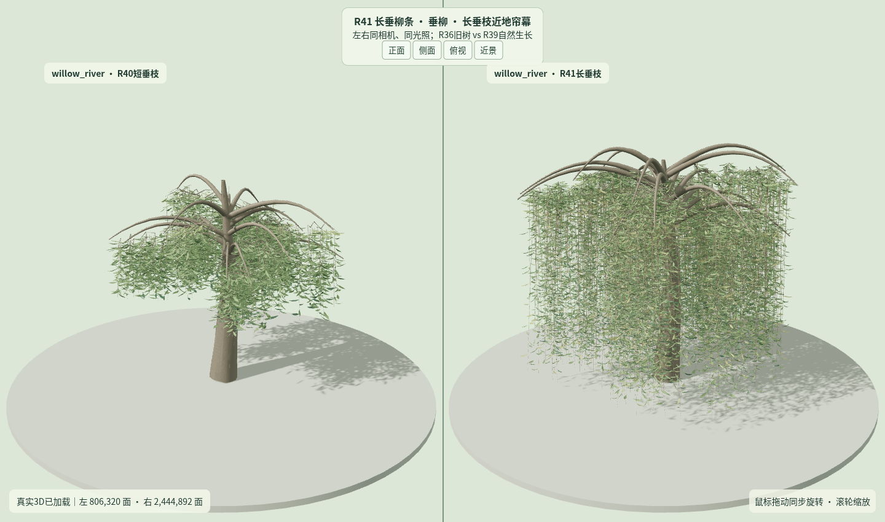
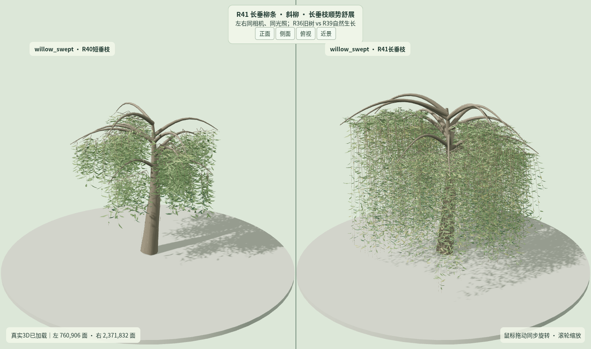
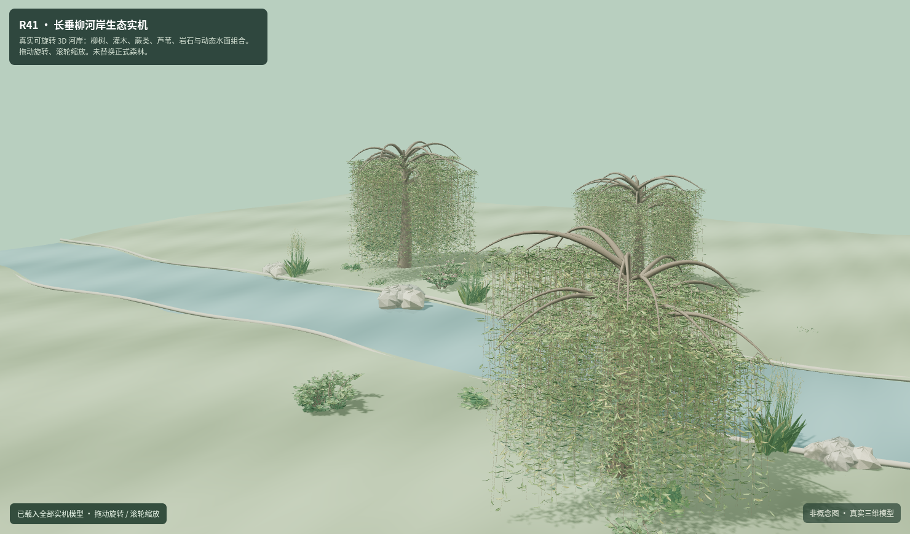

河岸垂柳 · R41
原来树冠下的短须变成从高处悬垂的长柳条，大量枝梢接近地面，柳帘和枝间透光间隙更明显。
旋转河岸垂柳 3D A/B对照成熟垂柳的自然生长形态，重新制作接近地面的长柳帘：弧形骨架从树冠向外扩展，枝梢连续弯曲下垂，窄叶沿真实细枝交错排列。不使用绿色球形叶团或 2D 平面假树冠。

原来树冠下的短须变成从高处悬垂的长柳条，大量枝梢接近地面，柳帘和枝间透光间隙更明显。
旋转河岸垂柳 3D A/B
保留倾斜主枝，长柳条随重力连续下弯；避免整棵树被统一成圆柱形挂帘。
旋转斜生垂柳 3D A/B
把长垂柳、灌木、蕨叶、芦苇、草丛、岩石和程序化动态水面一起摆入河岸，验证它们在同一光照与相机中能否协调，而不是只看单树。
打开可自由旋转的河岸 3D